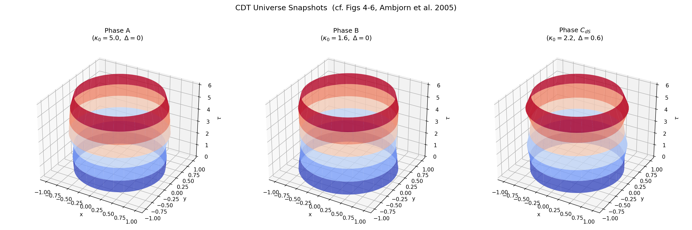
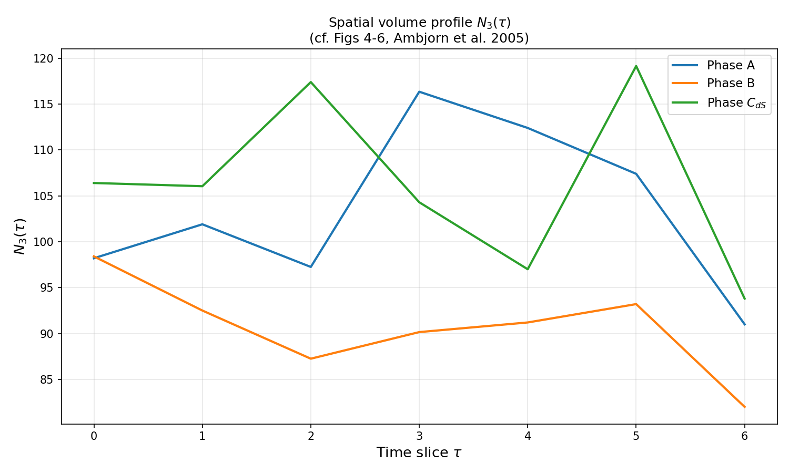
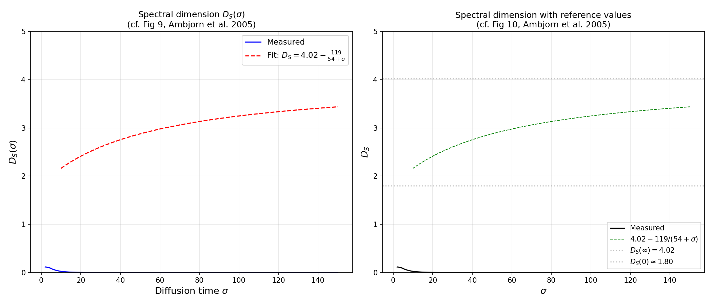
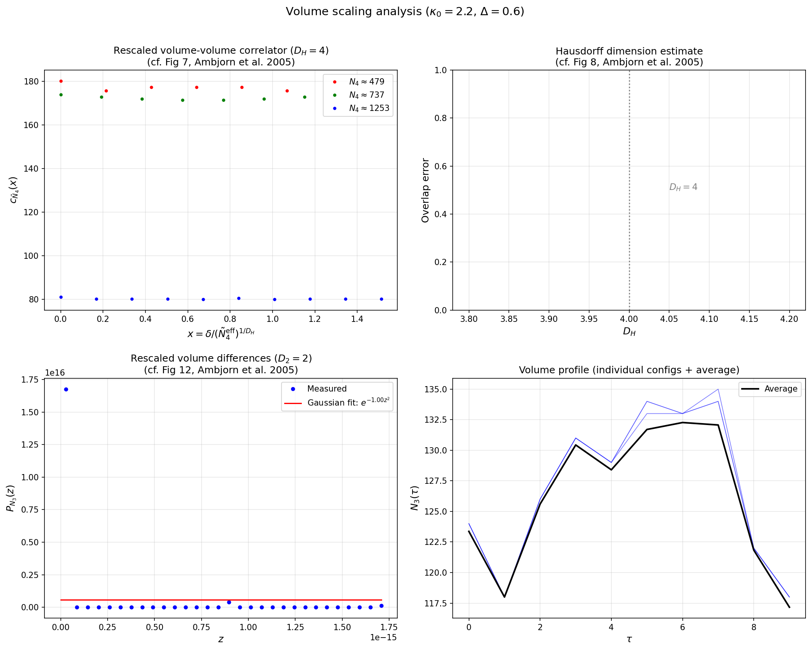
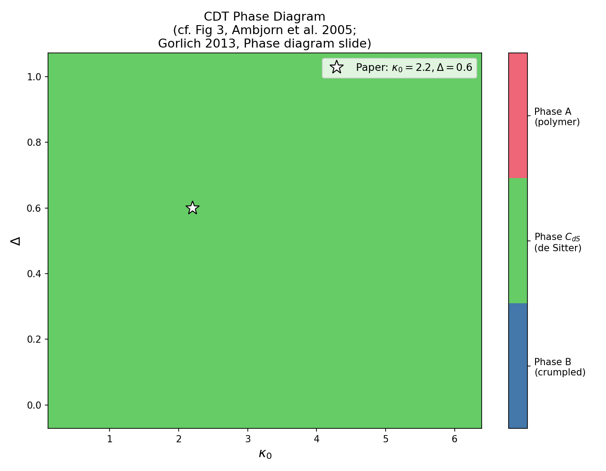
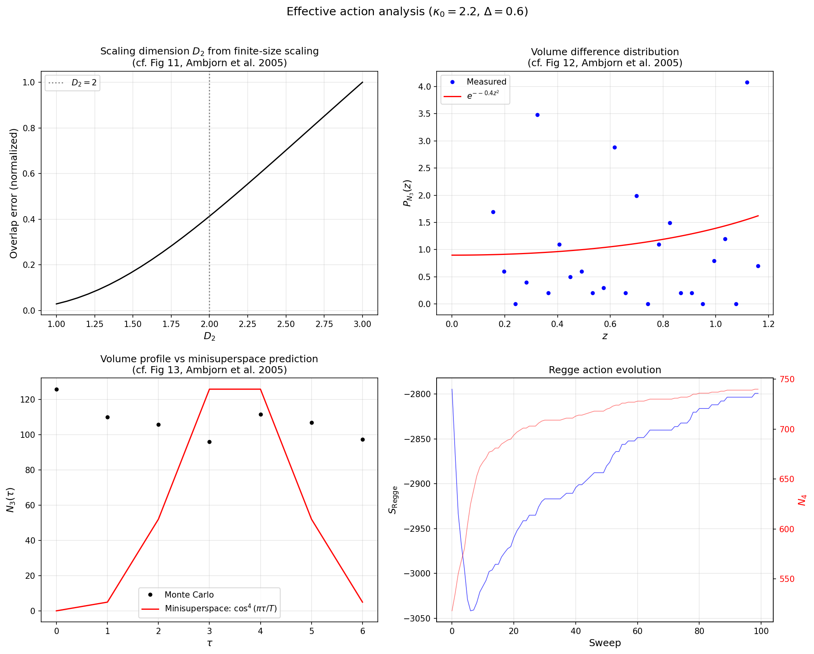
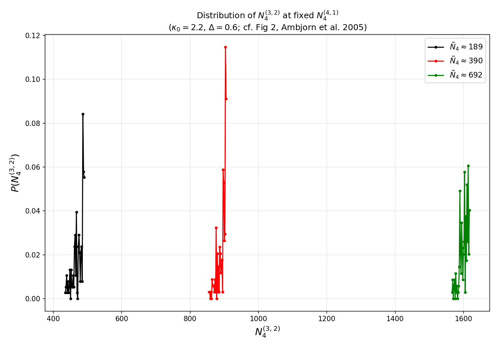

CDT Examples¶
These examples reproduce key results from the Causal Dynamical Triangulations
literature. Each script runs a Monte Carlo simulation using the caset
library and produces plots that can be compared to the corresponding figures
in the original papers.
All scripts accept --save <path.png> to save output, or display
interactively by default. Use --help on any script for the full list
of parameters.
Volume Profiles in Phases A, B, C¶
Script: examples/volume_profile_phases.py
Reproduces: Figures 4, 5, 6 of Ambjorn, Jurkiewicz, Loll, Reconstructing the Universe, Phys. Rev. D 72 (2005).
The spatial volume profile \(N_3(\tau)\) — the number of tetrahedra at each time slice \(\tau\) — is the observable that most clearly distinguishes the three phases of 4D CDT:
Phase A (\(\kappa_0 = 5.0\), \(\Delta = 0\)): branched-polymer geometry with thin stalks and irregular maxima.
Phase B (\(\kappa_0 = 1.6\), \(\Delta = 0\)): crumpled geometry where all volume collapses to one or two time slices.
Phase \(C_{dS}\) (\(\kappa_0 = 2.2\), \(\Delta = 0.6\)): extended, smooth de Sitter universe whose profile matches \(\cos^4(\pi\tau/T)\).
The 3D surface-of-revolution plots show the “shape of the universe” at each time, where the circumference is proportional to \(\sqrt{N_3(\tau)}\).
python examples/volume_profile_phases.py --n-simplices 500 --n-therm 50 --n-meas 20
{kind=link}

{kind=link}

Spectral Dimension¶
Script: examples/spectral_dimension.py
Reproduces: Figures 9, 10 of Reconstructing the Universe.
The spectral dimension \(D_S(\sigma)\) is measured by running a discrete diffusion process on the dual graph of the triangulation. The return probability \(P(\sigma)\) — the probability that a random walker returns to its starting simplex after \(\sigma\) steps — encodes the effective dimension:
The key discovery is a scale-dependent spectral dimension:
interpolating between \(D_S \approx 1.80\) at short distances (Planckian quantum geometry) and \(D_S \approx 4.02\) at large distances (classical four-dimensional spacetime).
python examples/spectral_dimension.py --n-simplices 500 --n-configs 5 --max-sigma 150
{kind=link}

Volume-Volume Correlator and Hausdorff Dimension¶
Script: examples/volume_scaling.py
Reproduces: Figures 7, 8, 12 of Reconstructing the Universe.
The volume-volume correlator (Eq. 7 of the paper) measures how spatial volumes at different times are correlated:
When rescaled by \(x = \delta / (\tilde{N}_4^{\text{eff}})^{1/D_H}\) with \(D_H = 4\), correlators at different system sizes collapse onto a universal curve, providing evidence that the Hausdorff dimension is four.
The script also measures the distribution of rescaled volume differences between adjacent slices, which fits a Gaussian \(e^{-cz^2}\).
python examples/volume_scaling.py --n-simplices 500 --n-meas 30
{kind=link}

Phase Diagram¶
Script: examples/phase_diagram.py
Reproduces: Figure 3 of Reconstructing the Universe and the phase diagram from Gorlich, Introduction to CDT (2013).
The coupling-constant space \((\kappa_0, \Delta)\) is scanned on a grid. At each point, a short CDT simulation is run and the resulting volume profile is classified into one of three phases:
Phase |
\(\kappa_0\) |
\(\Delta\) |
Geometry |
|---|---|---|---|
A |
large |
any |
branched polymer |
B |
small |
small |
crumpled |
\(C_{dS}\) |
moderate |
\(> 0\) |
de Sitter |
The white star marks the coupling constants used in most measurements in the paper (\(\kappa_0 = 2.2\), \(\Delta = 0.6\)).
python examples/phase_diagram.py --grid-size 8 --n-simplices 200 --n-sweeps 30
{kind=link}

Effective Action and Minisuperspace¶
Script: examples/effective_action.py
Reproduces: Figures 11, 12, 13 of Reconstructing the Universe.
The effective action governing the scale factor dynamics is extracted by measuring how spatial volume fluctuates between adjacent time slices. The Euclidean effective action has the form (Eq. 40):
This matches the minisuperspace action of quantum cosmology, but with a positive kinetic term (the conformal mode problem is solved nonperturbatively by the causal structure of CDT).
The panels show:
Top left: Finite-size scaling to extract the kinetic dimension \(D_2 \approx 2\)
Top right: Distribution of rescaled volume differences (Gaussian fit)
Bottom left: Monte Carlo volume profile vs. minisuperspace \(\cos^4\) prediction
Bottom right: Regge action and volume evolution during the simulation
python examples/effective_action.py --n-simplices 500 --n-meas 40
{kind=link}

\(N_{32}\) Distribution at Fixed \(N_{41}\)¶
Script: examples/n32_distribution.py
Reproduces: Figure 2 of Reconstructing the Universe.
In 4D CDT the volume-fixing term constrains \(N_4^{(4,1)}\), but the number of \((3,2)\)-simplices fluctuates freely. The distribution of \(N_4^{(3,2)}\) is sharply peaked at each target volume, demonstrating that the two simplex types are strongly correlated in the de Sitter phase. As the target volume increases, the distribution narrows and shifts to larger \(N_4^{(3,2)}\) values.
python examples/n32_distribution.py --n-meas 200
{kind=link}

References¶
J. Ambjorn, J. Jurkiewicz, R. Loll, Reconstructing the Universe, Phys. Rev. D 72 (2005), hep-th/0505154
A. Gorlich, Introduction to Causal Dynamical Triangulations (2013)
R. Loll, Quantum Gravity from Causal Dynamical Triangulations: A Review, Class. Quant. Grav. 37 (2020), arXiv:1905.08669